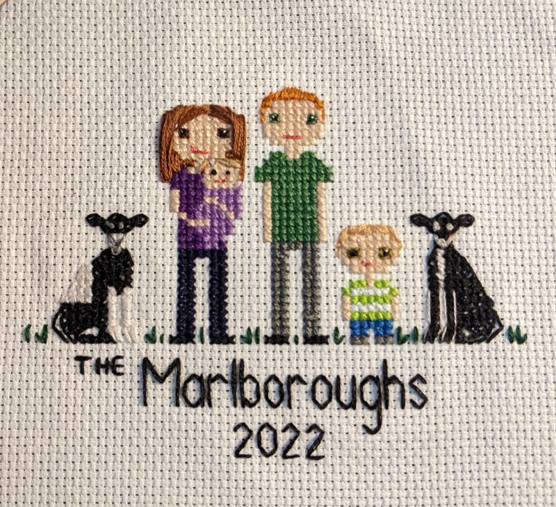

Fiber Crafts
Custom Cross Stitch & Embroidery Art
Our Fiber Craft Services
We specialize in creating personalized cross stitch and embroidery pieces that capture your precious memories and bring warmth to your home. From family portraits to drawings of your home, each piece is meticulously crafted with attention to detail.

Family Portraits
Custom cross-stitched family portraits
Home Portraits
Cross-stitched renderings of your home
Commission a Piece
Ready to transform your memories into beautiful fiber art? Contact us to discuss your project and get a quote.